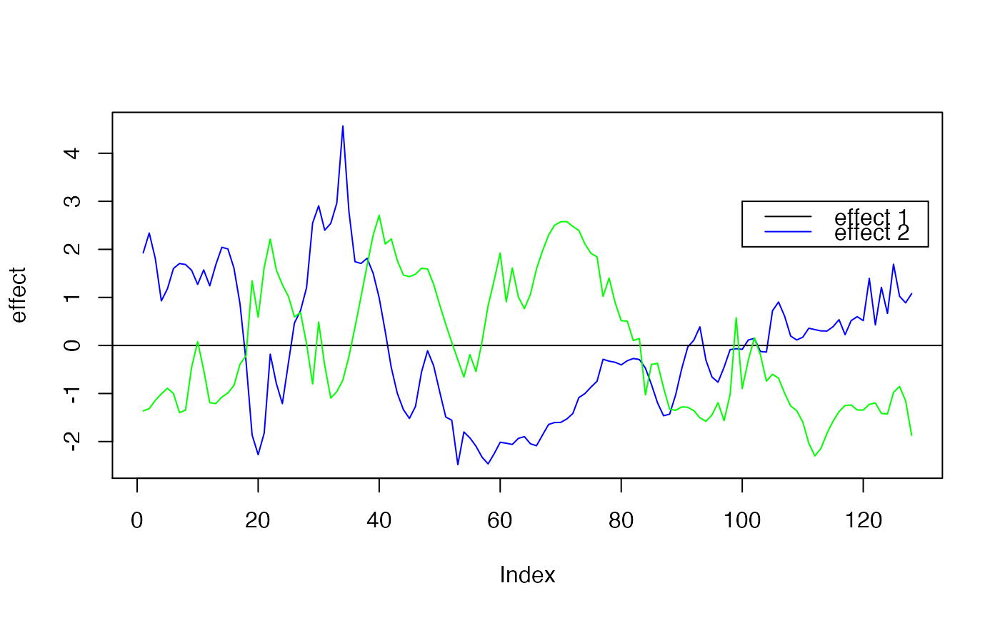
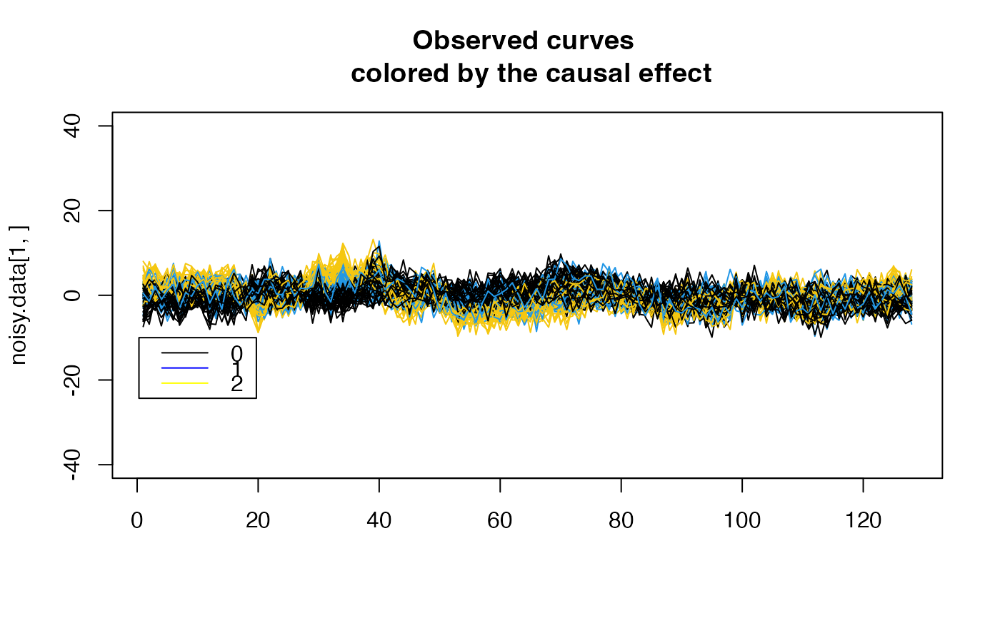
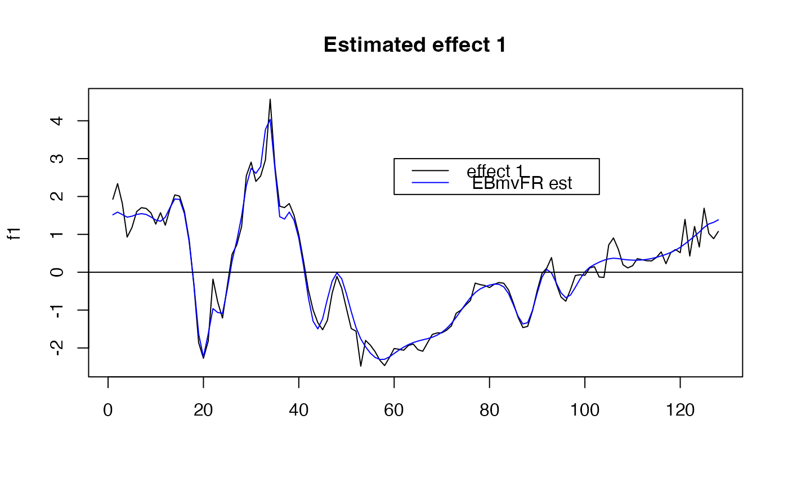
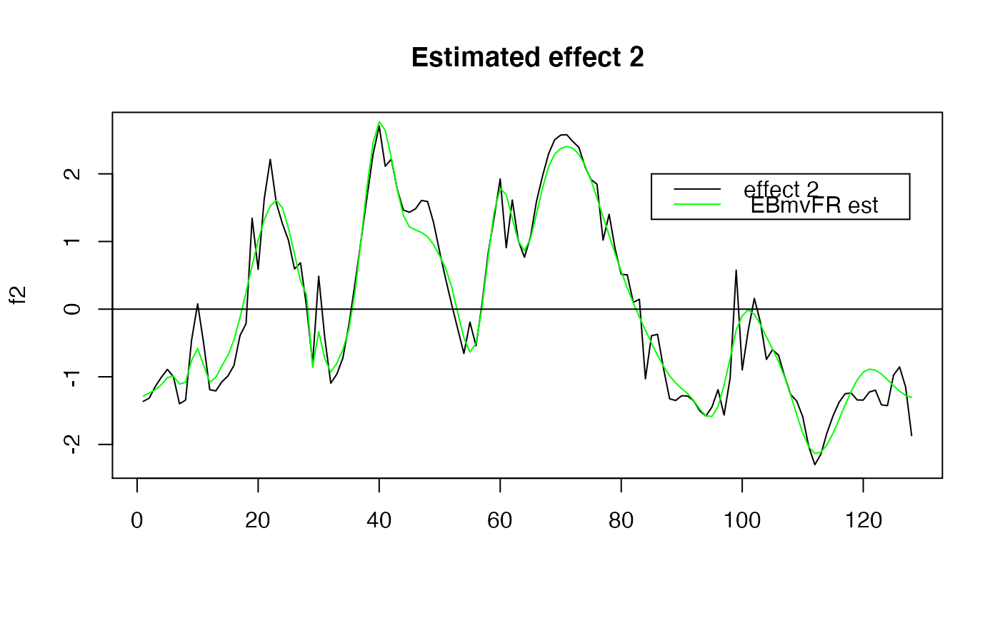

Empirical Bayes multivariate functional regression
EBmvFR(
Y,
X,
adjust = FALSE,
pos = NULL,
prior = "mixture_normal_per_scale",
verbose = TRUE,
maxit = 100,
tol = 0.1,
init_pi0_w = 1,
nullweight,
control_mixsqp = list(verbose = FALSE, eps = 1e-06, numiter.em = 4),
thresh_lowcount = 0,
cal_obj = FALSE,
quantile_trans = FALSE,
gridmult = sqrt(2),
max_step_EM = 1,
max_SNP_EM = 100
)functional phenotype, matrix of size N by size J. The underlying algorithm uses wavelet, which assumes that J is of the form J^2. If J is not a power of 2, susiF internally remaps the data into a grid of length 2^J
matrix of size n by p contains the covariates
logical if set to TRUE (default FALSE), then the output contains the adjusted coeficients (usefull to correct for batch effect)
vector of length J, corresponding to position/time pf the observed column in Y, if missing, suppose that the observation are evenly spaced
specify the prior used in susiF. The two available choices are available "mixture_normal_per_scale", "mixture_normal". Default "mixture_normal_per_scale",
If verbose = TRUE, the algorithm's progress,
and a summary of the optimization settings are printed to the
console.
Maximum number of IBSS iterations.
a small, non-negative number specifying the convergence
tolerance for the IBSS fitting procedure. The fitting procedure
will halt when the difference in the variational lower bound, or
“ELBO” (the objective function to be maximized), is less
than tol.
starting value of weight on null compoenent in mixsqp (between 0 and 1)
numeric value for penalizing likelihood at point mass 0 (usefull in small sample size)
list of parameter for mixsqp function see mixsqp package
numeric, used to check the wavelet coefficients have problematic distribution (very low dispersion even after standardization). Basically check if the median of the absolute value of the distribution of a wavelet coefficient is below this threshold. If yes, the algorithm discard this wavelet coefficient (setting its estimate effect to 0 and estimate sd to 1). Set to 0 by default. It can be useful when analyzing sparse data from sequence based assay or small samples.
logical if set as TRUE compute ELBO for convergence monitoring
logical if set as TRUE perform normal quantile transform on wavelet coefficients
numeric used to control the number of components used in the mixture prior (see ashr package for more details). From the ash function: multiplier by which the default grid values for mixsd differ from one another. (Smaller values produce finer grids.). Increasing this value may reduce computational time
see susiF function
see susiF function
Empirical Bayes multivariate functional regression
library(ashr)
#>
#> Attaching package: ‘ashr’
#> The following object is masked from ‘package:fsusieR’:
#>
#> get_pi0
library(wavethresh)
#> Loading required package: MASS
#> WaveThresh: R wavelet software, release 4.7.2, installed
#> Copyright Guy Nason and others 1993-2022
#> Note: nlevels has been renamed to nlevelsWT
set.seed(1)
#Example using curves simulated under the Mixture normal per scale prior
rsnr <- 1 #expected root signal noise ratio
N <- 100 #Number of individuals
P <- 10 #Number of covariates/SNP
pos1 <- 1 #Position of the causal covariate for effect 1
pos2 <- 5 #Position of the causal covariate for effect 2
lev_res <- 7#length of the molecular phenotype (2^lev_res)
f1 <- simu_IBSS_per_level(lev_res )$sim_func#first effect
f2 <- simu_IBSS_per_level(lev_res )$sim_func #second effect
plot( f1, type ="l", ylab="effect", col="blue")
abline(a=0,b=0)
lines(f2, type="l", col="green")
legend(x=100,
y=3,
lty = rep(1,3),
legend= c("effect 1", "effect 2" ),
col=c("black","blue","yellow"))

G = matrix(sample(c(0, 1,2), size=N*P, replace=TRUE), nrow=N, ncol=P) #Genotype
beta0 <- 0
beta1 <- 1
beta2 <- 1
noisy.data <- list()
for ( i in 1:N)
{
f1_obs <- f1
f2_obs <- f2
noise <- rnorm(length(f1), sd= (1/ rsnr ) * var(f1))
noisy.data [[i]] <- beta1*G[i,pos1]*f1_obs + beta2*G[i,pos2]*f2_obs + noise
}
noisy.data <- do.call(rbind, noisy.data)
plot( noisy.data[1,], type = "l", col=(G[1, pos1]*3+1),
main="Observed curves \n colored by the causal effect", ylim= c(-40,40), xlab="")
for ( i in 2:N)
{
lines( noisy.data[i,], type = "l", col=(G[i, pos1]*3+1))
}
legend(x=0.3,
y=-10,
lty = rep(1,3),
legend= c("0", "1","2"),
col=c("black","blue","yellow"))

Y <- noisy.data
X <- G
#Running Empirical Bayes multivariate function regression
out <- EBmvFR(Y,X )
#> [1] "Starting initialization"
#> [1] "Discarding 0 wavelet coefficients out of 128"
#> [1] "Initialization done"
#> [1] "Fitting effect 1 , iter 1"
#> [1] "Fitting effect 2 , iter 1"
#> [1] "Fitting effect 3 , iter 1"
#> [1] "Fitting effect 4 , iter 1"
#> [1] "Fitting effect 5 , iter 1"
#> [1] "Fitting effect 6 , iter 1"
#> [1] "Fitting effect 7 , iter 1"
#> [1] "Fitting effect 8 , iter 1"
#> [1] "Fitting effect 9 , iter 1"
#> [1] "Fitting effect 10 , iter 1"
#> [1] "Fitting effect 1 , iter 2"
#> [1] "Fitting effect 2 , iter 2"
#> [1] "Fitting effect 3 , iter 2"
#> [1] "Fitting effect 4 , iter 2"
#> [1] "Fitting effect 5 , iter 2"
#> [1] "Fitting effect 6 , iter 2"
#> [1] "Fitting effect 7 , iter 2"
#> [1] "Fitting effect 8 , iter 2"
#> [1] "Fitting effect 9 , iter 2"
#> [1] "Fitting effect 10 , iter 2"
#> [1] "Fitting effect 1 , iter 3"
#> [1] "Fitting effect 2 , iter 3"
#> [1] "Fitting effect 3 , iter 3"
#> [1] "Fitting effect 4 , iter 3"
#> [1] "Fitting effect 5 , iter 3"
#> [1] "Fitting effect 6 , iter 3"
#> [1] "Fitting effect 7 , iter 3"
#> [1] "Fitting effect 8 , iter 3"
#> [1] "Fitting effect 9 , iter 3"
#> [1] "Fitting effect 10 , iter 3"
#the easiest way to visualize the result is to use the plot_susiF function
plot( f1, type="l", main="Estimated effect 1", xlab="")
lines(unlist(out$fitted_func[1,]),col='blue' )
abline(a=0,b=0)
legend(x= 60,
y=3,
lty= rep(1,2),
legend = c("effect 1"," EBmvFR est "),
col=c("black","blue" )
)

plot( f2, type="l", main="Estimated effect 2", xlab="")
lines(unlist(out$fitted_func[5,]),col='green' )
abline(a=0,b=0)
legend(x= 85,
y= 2,
lty= rep(1,2),
legend = c("effect 2"," EBmvFR est "),
col=c("black","green" )
)

par(mfrow=c(1,1))